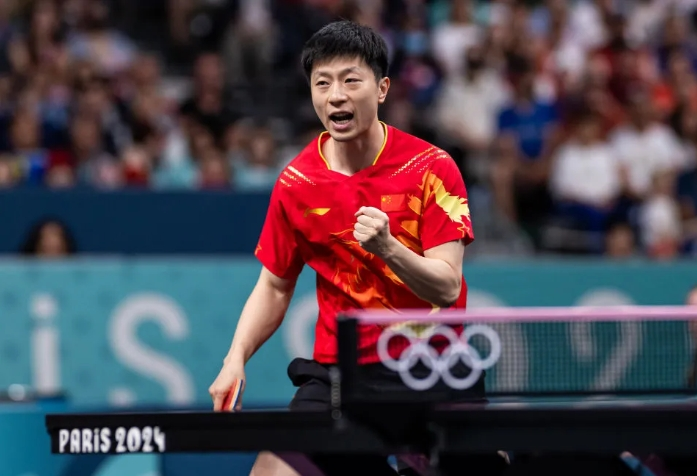

Top 5 graczy obecnie na œwiecie

Top 5 obecnych (2025) najlepszych graczy tenisa sto³owego na œwiecie (mê¿czyŸni):
Wang Chuqin (Chiny) — numer 1 w rankingu ITTF, mistrz œwiata, znany z agresywnego stylu i potê¿nych ataków.
Lin Shidong (Chiny) — m³oda gwiazda, bardzo dynamiczny gracz z shakehandem, œwietny w turniejach WTT.
Hugo Calderano (Brazylia) — najbardziej utytu³owany gracz z Ameryki Po³udniowej, ³¹czy technikê i si³ê, bardzo groŸny w rotacjach.
Tomokazu Harimoto (Japonia) — znany z szybkiej, ofensywnej gry, kontynuuje siln¹ karierê na scenie œwiatowej.
Truls Möregardh (Szwecja) — jeden z najlepszych europejskich graczy, bardzo wszechstronny (atak + rotacje)